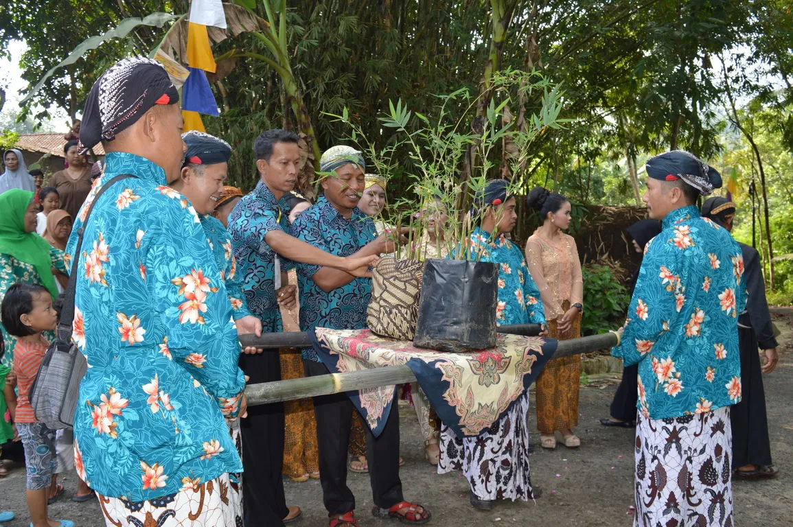
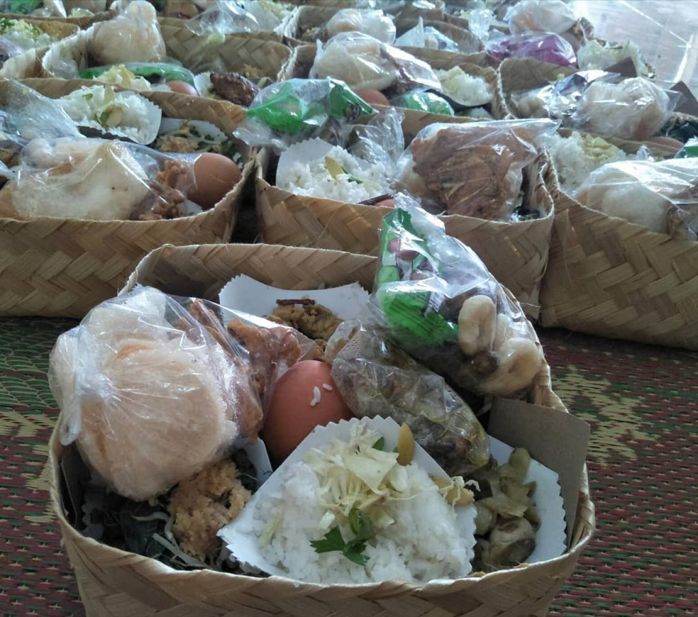

Watu kenteng merupakan salah satu peninggalan dari masa pemerintahan Belanda. Bentuk dari watu kenteng ini mirip dengan lumpang, yaitu alat untuk menumbuk bahan makanan. Penemuan watu kenteng ini dikaitkan dengan Simbah Bapak Samsudi, seorang petani berusia 80 tahun, yang diperkirakan berumur ratusan tahun. Simbah Bapak Samsudi meninggal dunia pada usia 110 tahun, dan diketahui bahwa watu kenteng telah ada sebelum kelahirannya. Menurut cerita, watu ini diyakini memiliki pasangannya atau sepasang, yaitu satu watu berjenis kelamin laki-laki dan satu watu berjenis kelamin perempuan. Watu kenteng yang berjenis kelamin laki-laki berada di Dusun Gunung Mijil, sementara watu perempuan berada di Dusun Pule.
Tolak bala hujan
Simbah Bakir, salah seorang sesepuh dari Desa Kebonsari, mengungkapkan beberapa cara yang digunakan untuk menolak bala atau mengusir hujan, yang telah dilakukan oleh para sesepuh dan leluhur pada zaman dulu. Salah satu cara yang digunakan adalah dengan mendirigan sapu lidi di tengah tanah lapang atau halaman sambil menancapkan berbagai macam bumbu dapur seperti cabe, bawang merah, dan bawang putih. Masyarakat Desa Kebonsari juga mengamalkan tradisi tolak bala ini dengan menancapkan sapu lidi yang dipasangi cabe, bawang merah, dan bawang putih di depan rumah mereka ketika sedang menjemur padi.
Konon, cara ini diyakini sangat efektif dalam menghadapi hujan dan angin kencang. Setelah sapu lidi dan bumbu dapur ditancapkan, hujan dan angin akan perlahan mereda dan berhenti. Penggunaan bumbu dapur seperti cabe dan bawang merah dan putih dipilih karena keduanya memiliki sifat pedas dan panas, sehingga diharapkan hujan akan urung datang dan takut dengan hal tersebut.
Sapu lidi dianggap sebagai pembersih, dan dengan menancapkannya di depan rumah, diharapkan mendung di langit akan bersih dan awan akan kembali cerah. Meskipun demikian, ritual tolak bala hujan ini sebenarnya bukan untuk menolak hujan yang sudah menjadi kodrat alam, melainkan untuk mengalihkan hujan ke tempat lain sementara waktu, sehingga padi yang sedang dijemur bisa kering tanpa terganggu oleh hujan. Tujuannya adalah memindahkan hujan, karena kehadiran hujan tetap dibutuhkan dalam kehidupan, dan dengan cara ini, hujan diharapkan datang pada waktu yang lebih tepat untuk keberlangsungan pertanian dan hidup sehari-hari.
Sadranan
Sadranan atau pamulen merupakan suatu acara penghormatan kepada leluhur atau keluarga yang telah meninggal dunia, yang biasanya dilakukan sekali setahun pada bulan Ruwah. Dalam kepercayaan kejawen, bulan Sya’ban dianggap sebagai bulan yang paling baik untuk menyelenggarakan pamulen arwah bagi leluhur atau keluarga yang telah berpulang, sehingga bulan ini juga dikenal sebagai bulan arwah atau bulan Ruwah, di mana masyarakat melakukan ngluru arwah untuk mengenang para leluhur.
Pelaksanaan sadranan bisa berbeda-beda sesuai dengan tradisi masing-masing, namun tujuannya umumnya sama dengan pamulen, yaitu memohon ampunan dari Tuhan Yang Maha Esa atas segala dosa dan kesalahan yang dilakukan oleh leluhur atau keluarga yang telah meninggal, mendoakan agar arwah mereka mendapatkan tempat yang layak, menanamkan kesadaran pada generasi yang masih hidup bahwa kelak mereka juga akan menyusul ke alam baka, dan mengingatkan agar mereka mempersiapkan bekal dengan baik untuk kehidupan di akhirat.
Dalam tradisi dahulu sebelum sadranan, masyarakat biasanya melakukan ziarah keliling ke makam para leluhur yang ada di setiap dusun. Setiap dusun memiliki makam sesepuh tersendiri seperti Makam Mbah Mijil di Dusun Gunung Mijil, Makam Simbah Cokro di Dusun Cakran, Makam Mbah Dalang di Dusun Dalangan, Makam Simbah Gupito di Dusun Gupit, Makam Mbah Pule di Dusun Pule, dan Makam Simbah Wage di Dusun Kebonwage. Ziarah keliling biasanya dilakukan pada pagi hari hingga siang hari sekitar dhuhur dan diikuti dengan pelaksanaan Nyadran, yang waktu pelaksanaannya bisa berbeda di setiap dusun.
Pada hari Nyadran, masyarakat Desa Kebonsari berkumpul di masjid dan menyediakan berbagai makanan seperti nasi beserta lauk-pauk, buah-buahan, makanan kemasan, dan lain-lain, tergantung pada kemampuan masing-masing. Semua makanan ini akan diletakkan dalam keranjang, dengan setiap rumah menyediakan minimal 4 keranjang makanan. Makanan yang telah terkumpul kemudian akan diantar ke masjid oleh masyarakat atau panitia. Di masjid, seluruh masyarakat berkumpul untuk bersama-sama berdoa yang dipimpin oleh sesepuh atau orang tua yang dihormati.
Pengantin Bambu

Pengantin bambu merupakan tradisi khas yang ada di Desa Kebonsari, yang melibatkan perkawinan bibit-bibit bambu dengan tujuan utama untuk melestarikan bahan baku pohon bambu dan menjaga kesuburan pertumbuhan pohon bambu yang sangat penting dalam kaitannya dengan kerajinan bambu yang menjadi ciri khas desa tersebut. Upacara Pengantin Bambu ini menjadi salah satu upaya untuk melestarikan dan menjaga keberlanjutan pohon-pohon bambu di daerah tersebut. Tradisi ini biasanya dilaksanakan pada bulan Oktober, tepatnya di minggu kedua, atau dalam kalender Jawa disebut mangsa kalima, karena pada masa itu para petani sudah mulai mempersiapkan penanaman.
Menurut Mas Anang, seorang penggerak budaya di Desa Kebonsari, prosesi pengantin bambu tidak jauh berbeda dengan prosesi pernikahan konvensional. Seperti pada pernikahan manusia, terdapat pengantin utama yang terdiri dari dua bibit bambu unggul, di mana pengantin laki-laki adalah bibit bambu unggul yang tinggi, sementara pengantin wanita adalah bibit bambu unggul yang pendek. Selain itu, ada pula kerajinan bambu dari masing-masing dusun yang turut berperan sebagai pengiring dalam acara pengantin bambu.
Rangkaian prosesi pengantin bambu mencakup beberapa tahapan, seperti siraman, pertemuan antara pengantin atau panggih, arak-arak kirab pengantin yang menampilkan hasil bumi dan potensi dari Desa Kebonsari, pasrah tinampi, dan ngomahke. Seluruh prosesi tersebut dijalankan dengan makna dan simbolisme tertentu, yang mencerminkan nilai-nilai dan kearifan lokal masyarakat Desa Kebonsari.
Supitan
Supitan atau khitanan adalah salah satu tradisi yang juga dikenal di masyarakat Indonesia, yang biasanya dilaksanakan ketika seorang anak laki-laki memasuki masa dewasa, sekitar usia 12-15 tahun. Di Desa Kebonsari, sebagian masyarakat masih mengikuti tradisi Supitan dengan menetapkan waktu pelaksanaannya berdasarkan hitungan tanggalan Jawa. Tradisi Supitan di Desa Kebonsari dijalankan dengan acara besar yang melibatkan banyak orang, sering kali diadakan pesta yang dihiasi dengan pertunjukan kesenian rakyat seperti wayang kulit, kesenian dayakan, pengajian, atau dangdutan, sesuai dengan keinginan dari yang mengadakan acara tersebut.
Kendhuren(Kenduri)

Kendhuren atau kenduri adalah sebuah perjamuan makan slametan yang diadakan untuk menyambut dan memperingati peristiwa penting dalam kehidupan manusia. Acara kendhuren ini selalu dimulai dan diakhiri dengan doa, dimaksudkan untuk menyambut atau memohon keselamatan terkait dengan tahap atau peristiwa kehidupan yang dialami oleh penyelenggara acara. Pada dasarnya, setiap acara kendhuren ditandai dengan permohonan keselamatan dan ucapan selamat atas tahap atau peristiwa kehidupan yang akan dijalani.
Mapati
Mapati adalah sebuah acara slametan yang dilakukan ketika seorang ibu hamil memasuki usia kehamilan 4 bulan. Acara mapati ini merupakan kegiatan keagamaan, terutama dalam Islam, di mana pada usia kandungan 4 bulan atau 120 hari, sang jabang bayi dikatakan telah ditiupkan rohnya. Acara mapati tidak termasuk dalam upacara adat, melainkan lebih bersifat keagamaan.
Biasanya acara mapati tidak melibatkan banyak hidangan seperti acara mitoni. Hidangan utama yang disediakan dalam acara mapati adalah nasi megono, yang terdiri dari nasi putih, nangka muda (gori), dan urap cecek (nangka muda yang dicacah dan diberi bumbu parutan kelapa). Hidangan ini merupakan bentuk ungkapan syukur atas segala kebaikan yang diterima.
Kupat sumpel, meskipun isinya sama dengan kupat biasa yang terbuat dari beras, memiliki perbedaan bentuk berupa limas segitiga. Makanan ini melambangkan hubungan manusia dengan Tuhan dan hubungan antar sesama manusia.
Mitoni
Mitoni adalah salah satu tradisi khas Jawa yang berasal dari kata "pitu" yang berarti "tujuh" dalam bahasa Jawa. Tradisi ini dilakukan sebagai bentuk pertolongan dan doa untuk ibu yang sedang mengandung pada usia kehamilan 7 bulan. Acara mitoni bertujuan untuk memohon kelancaran dalam kelahiran dan berdoa agar anak yang akan lahir kelak menjadi pribadi yang baik dan berbakti.
Di Dusun Gunung Mijil, Desa Kebonsari, prosesi mitoni biasanya dimulai dengan acara siraman. Calon ibu hamil akan dimandikan dengan air yang dicampur dengan bunga 7 macam dan 2 buah telur. Selanjutnya, seekor belut akan diluncurkan dari atas hingga ke bawah sebagai simbol kelancaran proses kelahiran, mengingat belut memiliki tubuh yang licin.
Selain prosesi siraman, ada pula acara jualan dawet yang dilakukan sebagai usaha dari calon orang tua untuk memenuhi kebutuhan anak kelak. Prosesi ini mencerminkan harapan agar anak mendapatkan rezeki berlimpah untuk dirinya dan orang tua. Namun, saat ini tradisi tersebut telah jarang dilakukan dan hanya menjadi simbolis. Meskipun demikian, air yang dicampur dengan bunga 7 macam tetap diadakan, namun tidak lagi untuk memandikan calon ibu.
Selama prosesi mitoni, berbagai hidangan juga disediakan, seperti nasi golong atau "sego golong," kluban, jajanan pasar, jenang merah dan putih, ketupat, serta berbagai buah-buahan yang akan disantap oleh para tetangga. Sebelum menyantap makanan, para tetangga yang hadir memberikan doa sebagai ungkapan harapan dan kebaikan bagi calon ibu dan calon anak.
Babaran/Lahiran
Babaran adalah momen kelahiran seorang bayi yang diiringi oleh adat setempat sebagai bentuk penyambutan. Kehadiran seorang bayi dalam pernikahan sangat dinantikan karena akan menambah kebahagiaan dalam keluarga dan menjadi kelanjutan garis keturunan. Oleh karena itu, babaran dianggap sebagai peristiwa penting yang penuh harapan bagi keluarga. Cara penyambutan kelahiran bayi bervariasi tergantung pada adat dan tradisi setempat. Beberapa acara adat yang umum dilakukan setelah kelahiran adalah brokohan, sepasaran, puputan, selapanan, setahunan, dan lain sebagainya.
Salah satu acara adat yang biasanya dilakukan setelah babaran adalah pisah ari-ari. Dalam kepercayaan kejawen, sebelum bayi lahir dan masih berada dalam rahim ibunya, mereka berada dalam kesatuan yang disebut kawah ari-ari. Saat kelahiran, kawah keluar terlebih dahulu, diikuti oleh bayi, dan diikuti pula oleh ari-ari yang masih menyatu dengan pusar perut bayi.
Lelayu
Kematian seseorang selalu membawa kabar yang menyedihkan bagi keluarga dan sanak saudara yang ditinggalkan. Keluarga yang ditinggalkan di Desa Kebonsari biasanya segera memberitahu tetangga atau saudara terdekat bahwa seseorang telah berpulang. Untuk menyampaikan kabar tersebut, mayoritas penduduk menggunakan toa masjid sebagai sarana untuk memberitahukan lelayu kepada masyarakat. Setelah mendapat kabar tersebut, masyarakat bergotong royong untuk membantu menggali kubur di pemakaman. Beberapa orang datang ke rumah duka untuk membantu merapikan rumah dan menyediakan ruang bagi para pelayat.
Sebelum jenazah dimakamkan, proses penghormatan dilakukan oleh pihak keluarga melalui selametan sesuai dengan selametan daur kubur. Slametan tersebut dilakukan pada waktu-waktu tertentu yang berhubungan dengan berpulangnya seseorang, seperti surtanah (sesaat sesudah meninggal dunia), nelung dina, mitung dino, matangpuluh dina, nyatus dina, mendhak pisan, mendhak pindho, dan nyewu. Selama acara slametan daur kubur, pamulen atau pamit kepada leluhur yang telah berpulang dilakukan dengan mengirim doa kepada Tuhan Yang Maha Esa melalui tahlilan dan puja-puji. Tradisi pamulen merupakan bentuk penghormatan kepada leluhur, karena meskipun telah berpulang, leluhur tetap meninggalkan jejak keberadaannya dalam pertalian batin.
Pada acara pamulen, keluarga yang ditinggalkan menunjukkan sikap hormat dan mengadakan acara selametan untuk menghormati leluhur yang telah meninggal dunia. Acara ini disebut juga dengan "mule" atau "memule."
Sikap dan niat menghormati orang yang telah berpulang dapat diwujudkan dengan berbagai cara yang berbeda, tergantung pada tradisi yang berlaku di masing-masing wilayah. Tujuan dari acara pamulen adalah memohon ampunan kepada Tuhan Yang Maha Esa atas segala dosa dan kesalahan yang dilakukan oleh leluhur semasa hidupnya. Selain itu, acara ini juga berfungsi untuk mendoakan agar roh leluhur mendapatkan tempat yang layak di alam baka. Selain itu, pamulen juga bertujuan untuk menanamkan pengertian kepada yang masih hidup bahwa suatu saat nanti kita juga akan menyusul leluhur di alam baka. Acara pamulen juga berusaha menanamkan kesadaran pada sesama agar menjadi orang yang pandai bersyukur dan berterima kasih kepada Tuhan Yang Maha Esa.